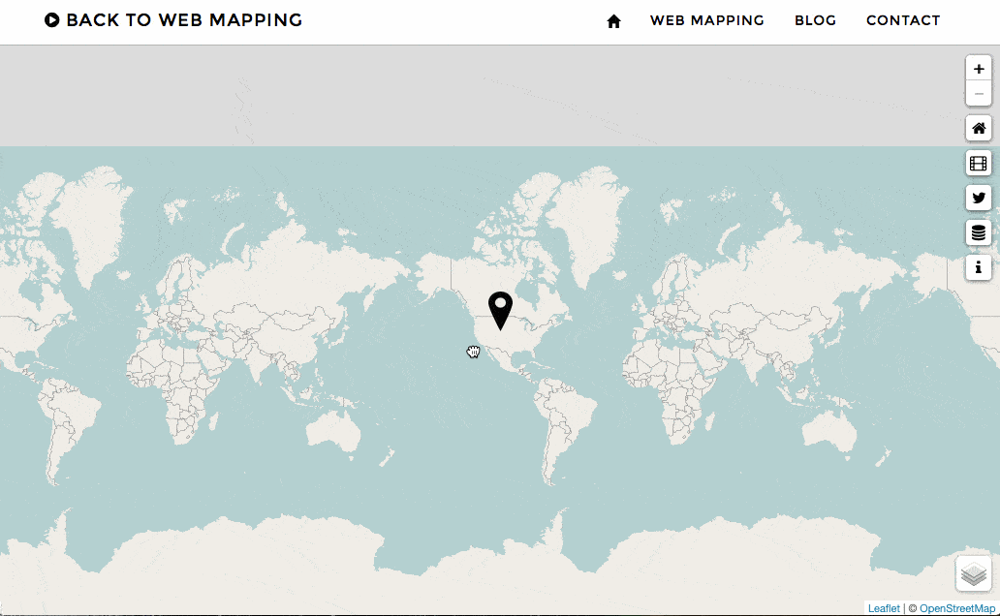
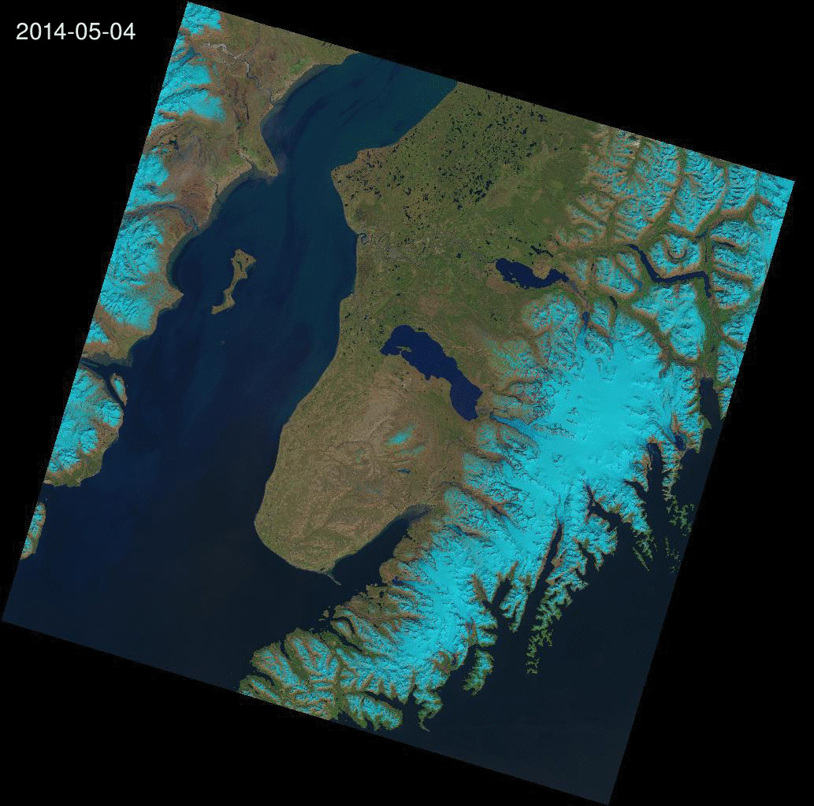

Landsat 8 Evolution
See how the world is changing
One month after my first project A Day Of Landsat 8, I'm glad to annonce a second one based on Landsat 8 data.
Landsat Evolution is a new tool/service that will enable everyone to acces all Landsat 8 open imagery and compute a time-serie gif animation. With more than two years of archive and a 16 days of revisite, it is amazing how much some place on earth have changed due to global warming, natural hazard or human impact.
Select a place, use filters to select a period and the best cloud coverage and with the time slider go through all landsat scenes available.
This is nice, but I wanted this project to be more than just a display. As I said, I wanted this project to be a service so I develloped an API to add the capacity to request proper GIF animation creation from the project page. So I'm proud to introduce my first ever developped web-service Remote Pixel API
Hosted on one of my Raspberry pi we are far form AWS capacity but it should process every query in less than 10 min. I'll cover the devellopment of the API in an other post more 'geeky'.
A database of all created GIFs is available here
Inspiration and Freely adapted form the amazing Libra by Developmentseed
More info and Usefull links:
- Date: May 2015
- Category: Landsat 8 / OpenData